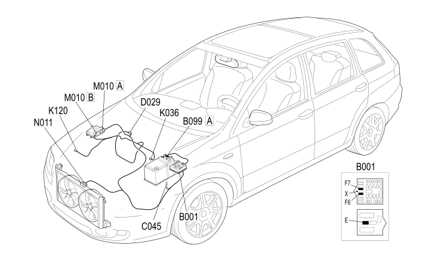

E5020 ENGINE COOLING - COMPONENT LOCATION
- Path
- Electrical equipment > 1 ELECTRICAL FUNCTIONS > E50 ENGINE CONTROL AND MANAGEMENT SYSTEMS > E5020 ENGINE COOLING > E5020 ENGINE COOLING - COMPONENT LOCATION
- Kind
- component location drawing
- Applies to
- engines: 2.4 JTD 20v; all production periods
- Interactive page
- https://sloeber94.github.io/elrnDB-fCrm/en/#/194001618
Applies to: engines: 2.4 JTD 20v; all production periods

Component code | Description | Reference to the assembly |
|---|---|---|
ENGINE COMPARTMENT JUNCTION UNIT | ||
MAXI FUSE BOX ON BATTERY | ||
FAN EARTH | ||
ENGINE CABLES/ENGINE SERVICES CABLE COUPLING | ||
ENGINE COOLANT TEMPERATURE SENSOR/SENDER UNIT | ||
LINEAR SENSOR FOR FANS | ||
ENGINE MANAGEMENT CONTROL UNIT | ||
ENGINE FAN MOTOR |
Topics linked from this page (13)
- 1056B MULTI-POINT INJECTION SYSTEM (MPI)
- 1088E COOLANT TEMPERATURE CONTROL DEVICES
- 5040B SYSTEM SAFETY CONTROL DEVICES
- 5505A MULTI-FUNCTION COMPONENTS
- 5530B BATTERY AND LEADS
- B001 ENGINE COMPARTMENT JUNCTION UNIT
- B099 MAXI FUSE BOX ON BATTERY
- C045 FAN EARTH
- D029 ENGINE CABLES/ENGINE SERVICES CABLE COUPLING
- K036 ENGINE COOLANT TEMPERATURE SENSOR/SENDER UNIT
- K120 LINEAR SENSOR FOR FANS
- M010 ENGINE MANAGEMENT CONTROL UNIT
- N011 ENGINE FAN MOTOR